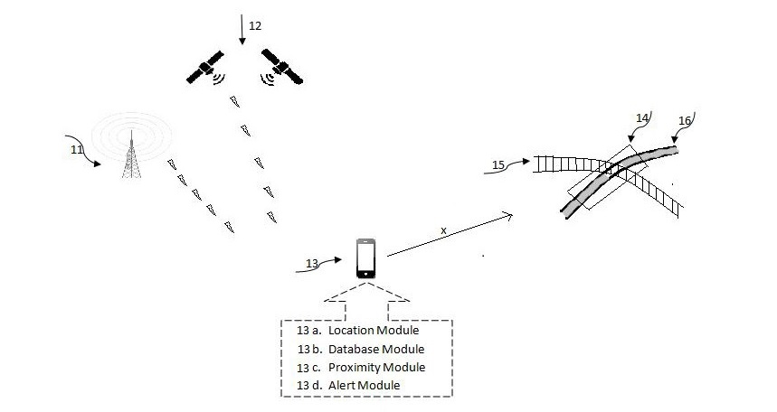
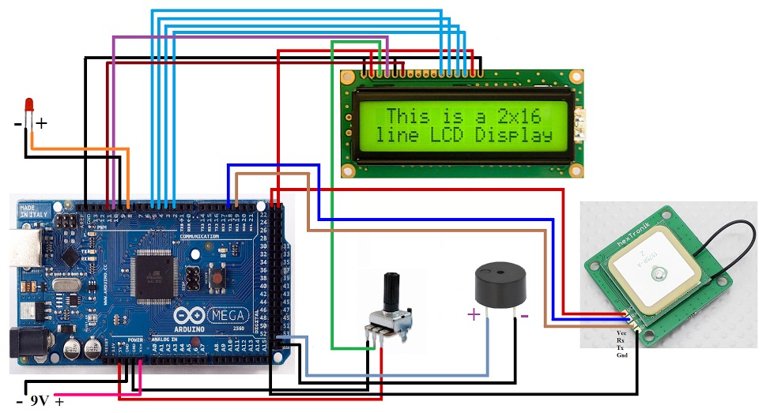
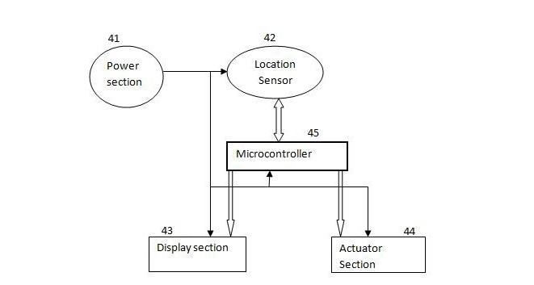
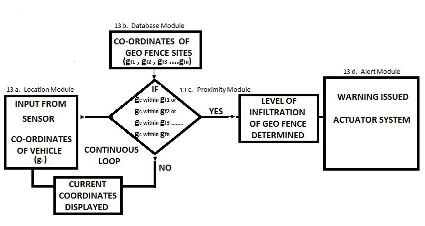

SEPTEMBER-OCTOBER 2015 | ZINE LAB | MNIT JAIPUR
OBJECTIVE
Building a system capable of designing a virtual perimeter-geofence around unmanned rail-road crossovers to prevent mishaps
METHODOLOGY
The system was designed to be mounted in vehicles and could initiate a series of warnings if in case the vehicle moves nearby any rail-road crossover. The system is designed to prevent any inappropriate attempt at crossing the junction when there are chances of a train to cross simultaneously. The features of the setup are:
• On-board GPS to ascertain the current location of the moving vehicle
• Pre-fed geofence co-ordinates for all the rail-road crossovers
• Warning system to alert vehicle drivers about the approaching danger
• Low power bluetooth supported system for instant update on new geofences
RESULTS
• Granted patent for the innovative technology
• The system current is being implemented into use by the North-Eastern Railways
GALLERY
   